Intent taxonomy
User requests are represented through five facets so the system can separately reason about topic, chart form, composition, decorative cues, and aesthetic tone.
Teaser
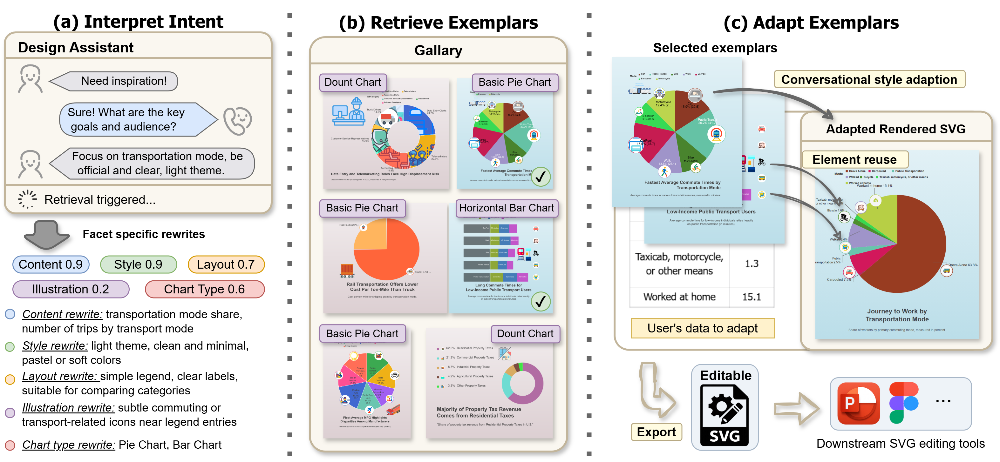
Abstract
While infographics are a powerful medium for communicating data-driven stories, authoring them from scratch remains difficult, especially for novice users. Retrieving strong exemplars can reduce that burden, but effective retrieval is challenging because users often express their needs in ambiguous natural language while infographic designs blend multiple visual and structural factors. This project introduces an intent-aware infographic retrieval framework that aligns free-form requests with infographic designs through a five-facet taxonomy spanning content, style, layout, illustration, and chart type. Building on the retrieved exemplars, the system also supports exemplar-driven adaptation through a conversational interface that helps users turn high-level design goals into editable outputs.
Method
User requests are represented through five facets so the system can separately reason about topic, chart form, composition, decorative cues, and aesthetic tone.
Each facet contributes with its own query text and importance weight, which makes retrieval more controllable than a single collapsed relevance score.
Retrieved exemplars are not the endpoint. They become references that users can pin, compare, and adapt in an integrated authoring workflow.
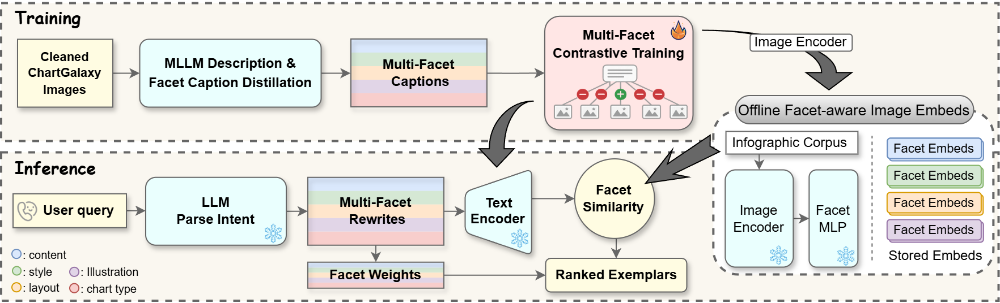
Demo
The video walks through retrieval, exemplar selection, and downstream adaptation inside the interactive system.
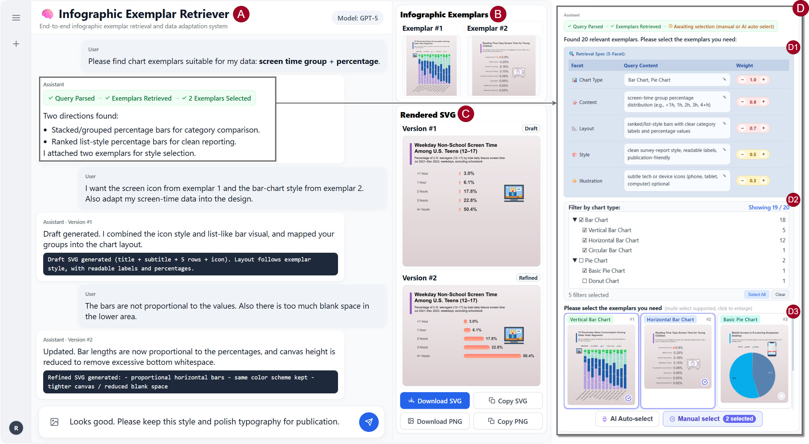
Gallery
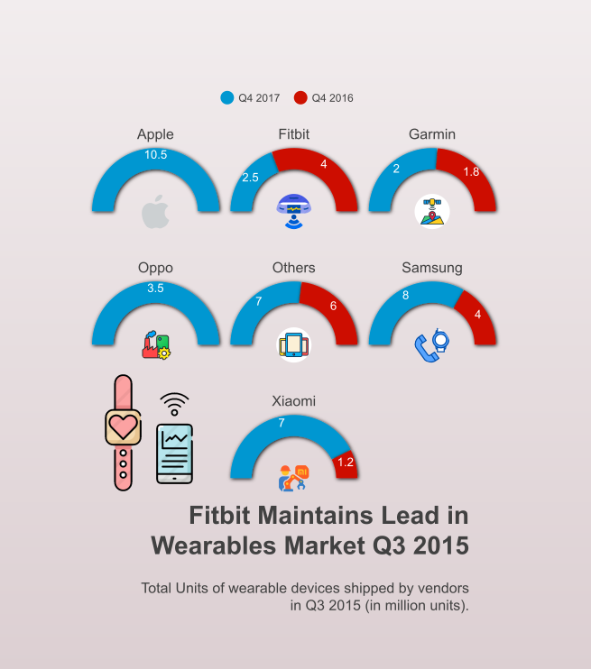
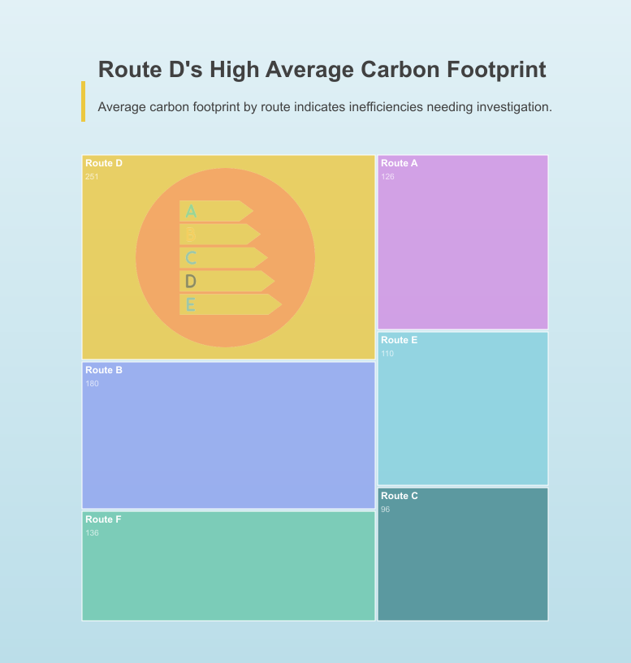
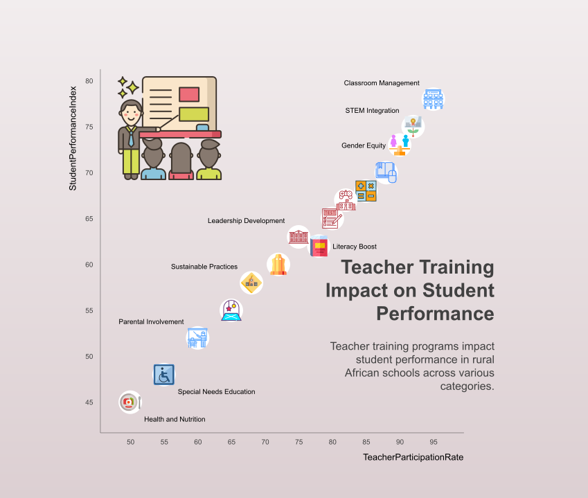
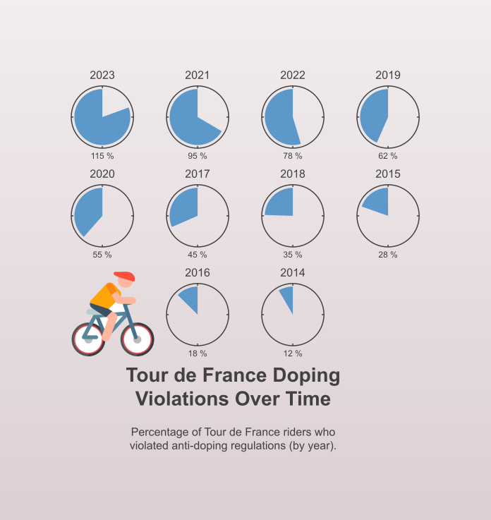
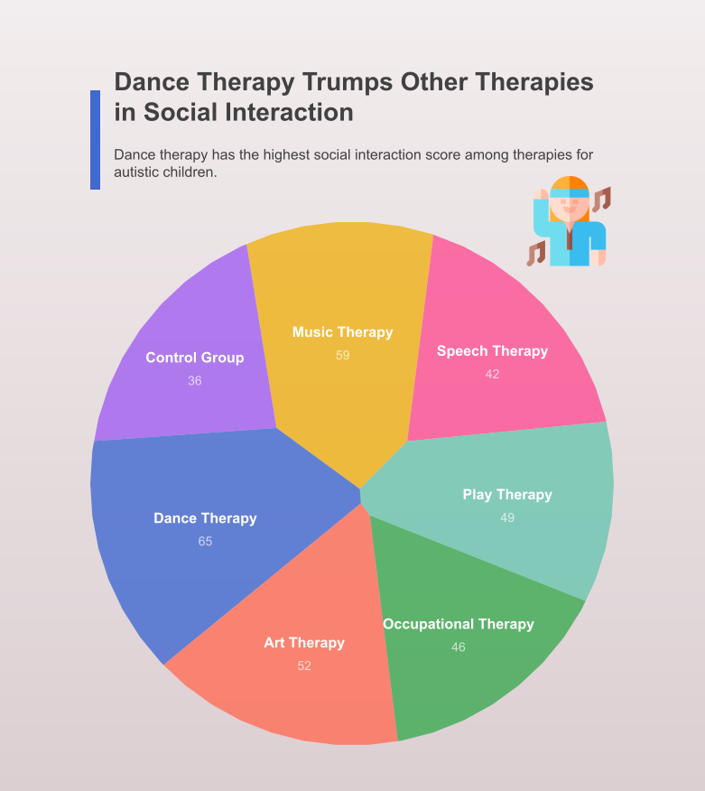
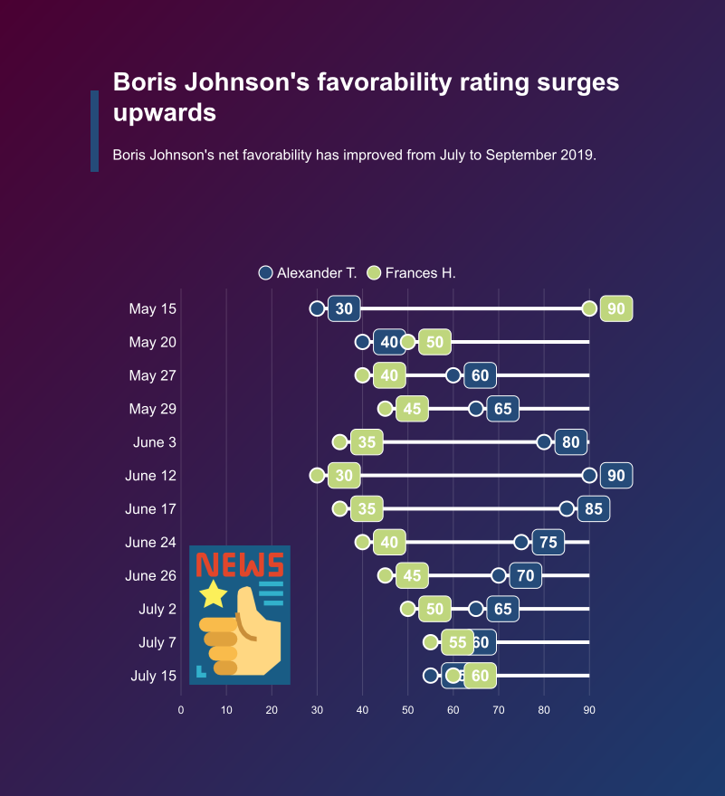
Additional Views
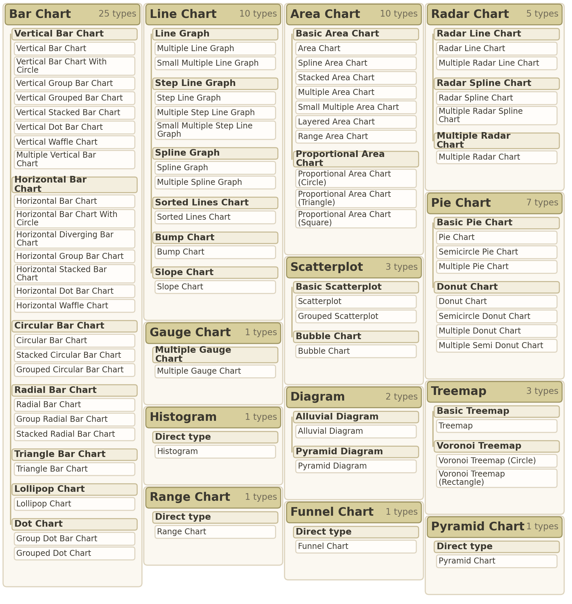
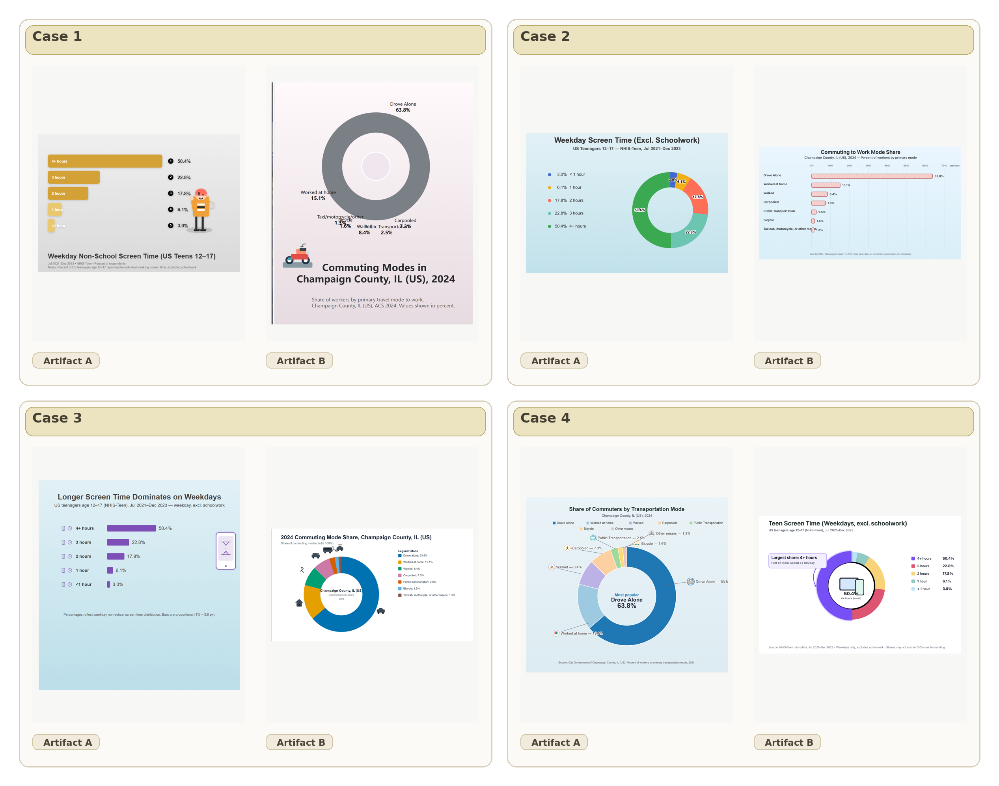
Resources
Main paper PDF for the project.
PDF SupplementaryAdditional prompts, protocol details, and system notes.
MP4 Demo VideoWalkthrough of the retrieval-and-adaptation workflow.
GitHub Code RepositorySeparate source repository linked from this homepage.
GitHub Homepage RepositoryThe GitHub Pages repository hosting this site.